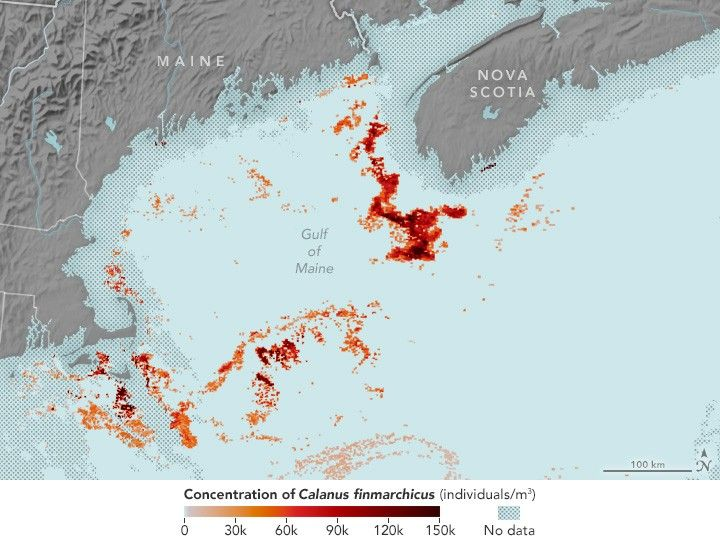

Mapping the Tiny Plankton That Feed Giant Right Whales
In the waters off New England, one of Earth’s rarest mammals swims slowly, mouth agape. The North Atlantic right whale filters clouds of tiny reddish zooplankton—called Calanus finmarchicus—from the sea. These zooplankton, no bigger than grains of rice, are the whale’s lifeline. Only about 370 of these massive creatures remain.
For decades, tracking the tiny plankton meant sending research vessels out in the ocean, towing nets and counting samples by hand. Now, scientists are looking from above instead.
Using NASA satellite data, researchers found a way to detect Calanus swarms at the ocean surface in the Gulf of Maine, picking up on the animals’ natural red pigment. This early-stage approach, described in a new study, may help researchers better estimate where the copepods gather and where whales might follow.
Tracking the zooplankton from space could aid both the whales and maritime industries. By predicting where these mammals are likely to feed, researchers and marine resource managers hope to reduce deadly vessel strikes and fishing gear entanglements—two major threats to the species. Knowing the feeding patterns could also help shipping and fishing industries operate more efficiently.
“NASA invests in this kind of research because it connects space-based observation with real-world challenges,” said Cynthia Hall, a support scientist at NASA headquarters in Washington. She works with the Early Career Research Program, which partly funded the work. “It’s yet another way to put NASA satellite data to work for science, communities, and ecosystems.”
The new approach uses data from the MODIS (Moderate Resolution Imaging Spectroradiometer) on NASA’s Aqua satellite. The MODIS instrument doesn’t directly see the copepods themselves. Instead, it reads how the spectrum of sunlight reflected from the ocean surface changes in response to what’s in the water.
When large numbers of the zooplankton rise to the surface, their reddish pigment—astaxanthin, the same compound that gives salmon their pink color—subtly alters how photons, or particles of light, from the sun are absorbed or scattered in the water. The fate of these photons in the ocean depends on the mix of living and non-living matter in seawater, creating a slight shift in color that MODIS can detect.
“We didn’t know to look for Calanus before in this way,” said Catherine Mitchell, a satellite oceanographer at Bigelow Laboratory for Ocean Sciences in East Boothbay, Maine. “Remote sensing has typically focused on smaller things like phytoplankton. But recent research suggested that larger, millimeter-sized organisms like zooplankton can also influence ocean color.”
A few years ago, researchers piloted a satellite method for detecting the copepods in Norwegian waters. Now, some of those same scientists—along with Mitchell’s team—have refined the approach and applied it to the Gulf of Maine, a crucial feeding ground for right whales during their northern migration. By combining satellite data, a model, and field measurements, they produced enhanced images that revealed Calanus swarms at the sea surface and were able to estimate numbers of the tiny animals.
The map at the top of this page (left) shows Calanus patches in Gulf of Maine surface waters on June 17, 2009, detected by the researchers while testing the new approach. Estimated concentrations of the copepods that day reached as high as 150,000 individuals per cubic meter. For comparison, the right image (MODIS bands 1, 4, 3) shows the same area in natural color, as the human eye would perceive it. Notice how the map depicts patterns that are nearly imperceptible to human eyes in natural color images alone, such as the dense patches southwest of Nova Scotia and the sparser patches toward the gulf’s center.
“We know the right whales are using habitats we don’t fully understand,” said Rebekah Shunmugapandi, also a satellite oceanographer at Bigelow and the study’s lead author. “This satellite-based Calanus information could eventually help identify unknown feeding grounds or better anticipate where whales might travel.”